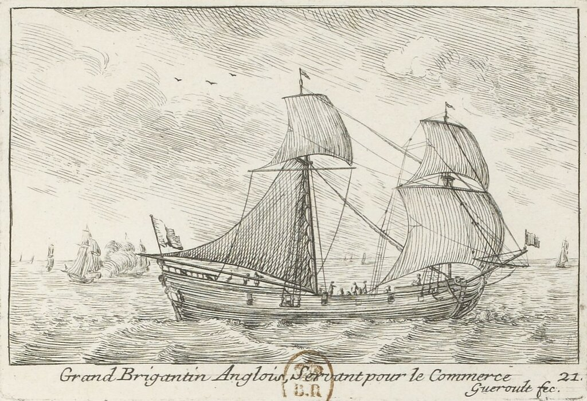
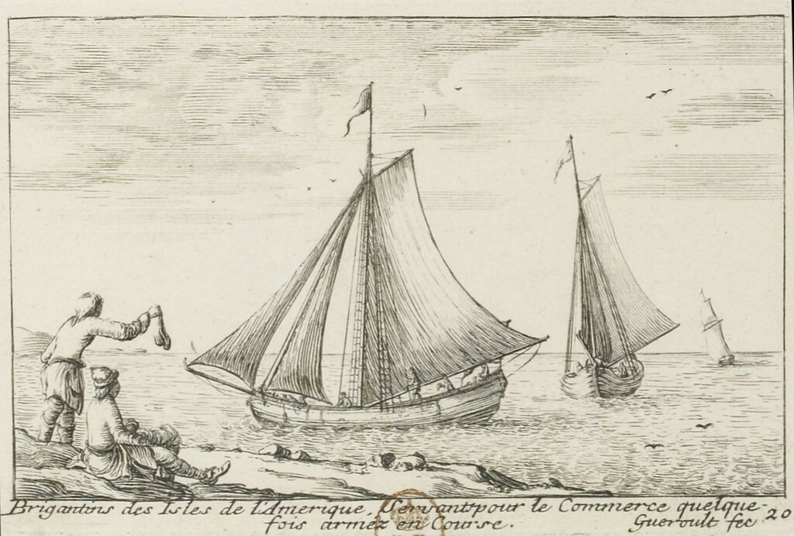

Бригантины: легенды и заблуждения
Adieu la brigantine,
Dont la voile latine…
Прощай, бригантина с латинским парусом…
1827. Гюго, Navarin VI, 61
Основной вопрос, который возникает в связи с переходом от парусно-гребного бригантина к парусной бригантине: почему совершенно новый тип корабля, причем не с латинскими, а с прямыми парусами, сохранил за собой имя гребной полугалеры - бригантин?
Чтобы разобраться в этом, прежде всего обратим внимание на то, когда появились парусные бригантины. Как почти всегда бывает в подобных случаях, точных документальных данных об этом нет, зато количество предположений и гипотез зашкаливает.

Большая английская бригантина. Гравюра Gueroult du Pas (1710)
На первом месте стоит, естественно, гипотеза Огюстена Жаля, который в своем «Морском Словаре» (1848) назвал изобретателем парусных бригантин французского военного и политического деятеля, губернатора (commandant ) Акадии (колонии Франции в Северной Америке) Жозефа Робино де Виллебона. В качестве обоснования этого утверждения О.Жаль приводит следующие соображения. В середине девяностых годов XVII века сложилась сложная оперативная обстановка в районе острова Джерси. Французы искали пути захвата его силами своих кораблей, базирующихся в порту Сен-Мало. Командовал соединением этих кораблей предок по отцовской линии столь почитаемого нами Александра Дюма – шевалье Дави де ла Пайетри (Charles-Martial Davy de la Pailleterie). Планируя операцию по высадке десанта на Джерси, де ла Пайетри предложил использовать для этой цели, наряду с четырьмя своими галерами, бригантину акадского губернатора де Виллебона. Де Виллебон уже прославился тем, что во Французской Канаде он успешно проводил боевые операции против английских моряков с помощью своих быстрых кораблей, которые он называл бригантинами. Огюстен Жаль полагает, что построенные де Виллебоном корабли получили свое название потому, что они выполняли точно те же функции, что и парусно-гребные бригантины Средиземного моря.
Гипотеза интересная, если бы не одно «но»: в тексте письма де ла Пайетри несколькими строками выше есть такая фраза:
...Ses 1500 hôes seroient portés à Gerzé sur les quatre galères, sur les Brigantins et autres bastiments de rame et sur les autres bastimens qui les accompagnoient à cette expédition.
Эти полторы тысячи человек будут доставлены на Джерси на четырех галерах, бригантинах и других гребных кораблях, а также других суда, которые включены в эту экспедицию.
без всякого сомнения, относящая бригантины к гребным судам.
Возможно, здесь небрежность автора плана, возможно речь идет о другой бригантине, но весомость аргументов О.Жаля явно уменьшается. Об этом говорят некоторые более поздние историки, не выдвигая, впрочем, других вариантов появления парусной бригантины. А факты упрямы: бригантина появилась именно в этот период. В альбоме Геру дю Па (Gueroult du Pas). изданном в 1710 году, мы встречаем изображение «бригантины Американских островов»

Бригантина Американских островов. Гравюра Gueroult du Pas (1710)
Это явно чисто парусное судно с гафельным, а не латинским вооружением. Более того, в том же альбоме появляется гравюра английской бригантины, изображенной в начале поста, которая представляет собой чисто парусный двухмачтовый корабль с прямым вооружением; отличие от других парусников такого типа - нет нижнего прямого паруса на грот мачте, вместо него помещен гафельный парус, который по-французски называется brigantine, по-английски spanker или позже driver, а по-русски – иногда контр-бизань, иногда бизань; но если строго следовать букве правил именования снастей на корабле, называть его следовало бы грота-гаф-трисель.
Именно эта особенность парусного вооружения – присутствие трапецевидного паруса, направленного в корму от грот-мачты, и стала основной характерной чертой нового типа двухмачтовых парусников – бригантин.
Существуют и другие варианты появления парусных бригантин в конце XVII века, связывающие их историю с бригом. О них мы поговорим в следующий раз.